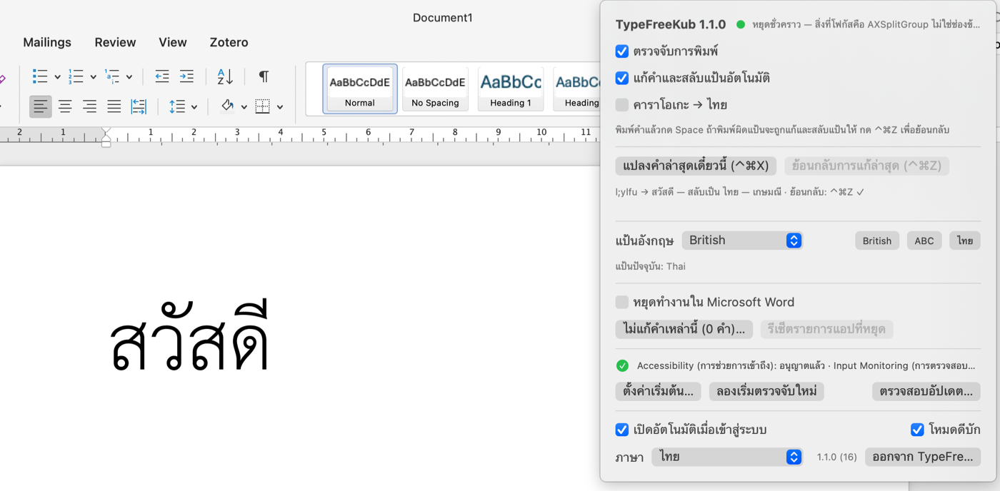

TypeFreeKub
ลืมสลับแป้นไทย/อังกฤษ? พิมพ์ต่อไปได้เลย แอปจะแก้คำให้และสลับแป้นให้เอง ทำงานในเครื่อง 100% ไม่มีการส่งข้อมูลออก
ดาวน์โหลด TypeFreeKub 1.1.5 สำหรับ macOS 13+ไฟล์ .dmg ขนาดประมาณ 3 MB เปิดแล้วลาก TypeFreeKub ไปใส่ Applications (เวอร์ชันทั้งหมด)
ใช้ฟรี รองรับทั้ง Apple Silicon และ Intel แจกจ่ายโดยตรงและผ่านการ notarize จาก Apple แล้ว (ไม่ผ่าน App Store เพราะแอปต้องใช้สิทธิ์ที่ App Store ไม่อนุญาต)

พิมพ์ l;ylfu แล้วกด Space → สวัสดี และแป้นสลับเป็นไทย
พิมพ์ ้ำสสน แล้วกด Space → hello และแป้นสลับเป็นอังกฤษ
พิมพ์ ้ำสสน แล้วกด Space → hello และแป้นสลับเป็นอังกฤษ
ทำงานอย่างไร
- ดูคำที่คุณเพิ่งพิมพ์ แล้วเทียบกับพจนานุกรมไทย 60,000 คำ และอังกฤษ 63,000 คำ ถ่วงน้ำหนักด้วยความถี่การใช้จริง
- แก้ให้เฉพาะเมื่อคำที่แปลงแล้วเป็นคำจริง ส่วนคำเดิมไม่ใช่ ถ้าไม่แน่ใจจะไม่แตะ
- กด ⌃⌘Z เพื่อย้อนกลับทันที และคำนั้นจะไม่ถูกแก้อีก หรือกด ⌃⌘X เพื่อสั่งแปลงคำล่าสุดเองได้ทุกเมื่อ
- ใช้ได้กับทุกแอป: TextEdit, Notes, Safari, Chrome, LINE, Slack, Word…
ความเป็นส่วนตัว
- แอปต้องขอสิทธิ์ Accessibility และ Input Monitoring เพื่อรู้ว่าคุณพิมพ์คำอะไรบนแป้นไหน
- ไม่มีการเชื่อมต่ออินเทอร์เน็ต ยกเว้นการตรวจสอบอัปเดตเวอร์ชัน ไม่มี analytics และไม่บันทึกสิ่งที่พิมพ์ลงดิสก์
- ไม่ทำงานในช่องรหัสผ่าน และเมื่อ Secure Input เปิดอยู่ (เช่น Terminal)
- โค้ดเปิดให้ตรวจสอบได้ — นโยบายความเป็นส่วนตัวฉบับเต็ม
ติดตั้ง
- ดาวน์โหลดไฟล์ .dmg เปิดแล้วลาก TypeFreeKub ไปใส่ Applications จากนั้นเปิดแอปจาก Applications
- ทำตามหน้าต่างตั้งค่า 3 ขั้นตอน (เปิดแป้นไทย+อังกฤษ, ให้สิทธิ์ 2 อย่าง)
- เปิด TextEdit พิมพ์ l;ylfu แล้วกด Space